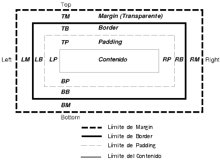
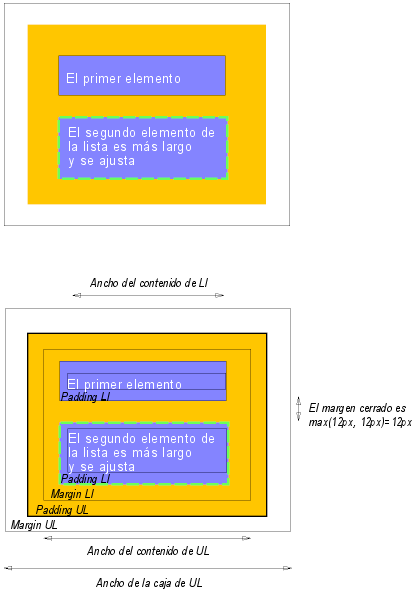

Contenidos
El modelo de caja de CSS describe las cajas rectangulares que son generadas por los elementos en la esructura del documento y compuestas de acuerdo al modelo de formato visual. La caja de página es una clase especial de caja que se describe en detalle en la sección sobre medios paginados.
Cada caja tiene un área de contenido (ej., texto, una imagen, etc.) y las áreas circundantes opcionales de padding, border y margin; el tamaño de cada área es especificado por las propiedades que se definen abajo. El siguiente diagrama muestra cómo se relacionan estas áreas y la terminología usada para referirse a las partes de margin, border y padding:
 [D]
Margin, border y padding pueden ser divididos en los segmentos left, right, top y bottom (ej., en el diagrama, "LM" para left margin, "RP" para right padding, "TB" para top border, etc.).
El perímetro de cada una de las cuatro áreas (contenido, padding, border y margin) es llamado "límite", de manera que cada caja tiene cuatro límites:
Cada límite puede dividirse en límite left (izquierdo), right (derecho), top (superior) y bottom (inferior).
Las dimensiones del área del contenido de una caja --el ancho del contenido y la altura del contenido-- dependen de varios factores: si el elemento que genera la caja tiene asignadas las propiedades 'width' o 'height', si la caja contiene texto u otras cajas, si la caja es una tabla, etc. El ancho y la altura de la caja son discutidos en el capítulo sobre detalles del modelo de composición visual.
El ancho de la caja está dado por la suma de los márgenes, bordes y rellenos izquierdos y derechos, y el ancho del contenido. La altura está dada por la suma de los márgenes, bordes y rellenos superiores e inferiores, y la altura del contenido.
El estilo del fondo de las distintas áreas de una caja es determinado como sigue:
Este ejemplo ilustra cómo interactúan los márgenes, los rellenos y los bordes. El documento HTML de ejemplo:
<!DOCTYPE HTML PUBLIC "-//W3C//DTD HTML 4.0//EN">
<HTML>
<HEAD>
<TITLE>Ejemplo de márgenes, rellenos y bordes</TITLE>
<STYLE type="text/css">
UL {
background: green;
margin: 12px 12px 12px 12px;
padding: 3px 3px 3px 3px;
/* No se especifica border */
}
LI {
color: black; /* el color del texto es negro */
background: gray; /* Contenido, padding será gris */
margin: 12px 12px 12px 12px;
padding: 12px 0px 12px 12px; /* Note 0px para padding right */
list-style: none /* sin viñeta antes de un ítem */
/* Ningún borde definido */
}
LI.withborder {
border-style: dashed;
border-width: medium; /* pone el ancho de border para todos los lados */
border-color: black;
}
</STYLE>
</HEAD>
<BODY>
<UL>
<LI>El primer elemento
<LI class="withborder">El segundo elemento de la lista es
más largo y se ajusta.
</UL>
</BODY>
</HTML>
resulta en una estructura del documento con (entre otras relaciones) un elemento UL que tiene dos LI hijos.
El primero de los diagramas siguientes ilustra el resultado que produciría este ejemplo. El segundo ilustra la relación entre los márgenes, el relleno y los bordes del elemento UL y la de sus elementos hijos LI.
 [D]
Observe que:
Las propiedades del margen especifican el ancho del área del margen de una caja. La propiedad resumida 'margin' determina el margen para los cuatro lados mientras que las otras propiedades sólo determinan su lado respectivo.
Las propiedades definidas en esta sección se refieren al tipo de valor para <margin-width>, que puede tomar uno de los siguientes valores:
Los valores negativos para las propiedades de los márgenes son permitidos, pero pueden existir limitaciones específicas de la implementación.
| Valor: | <margin-width> | inherit |
| Inicial: | 0 |
| Se aplica a: | todos los elementos |
| Se hereda: | no |
| Porcentajes: | se refieren al ancho del bloque de contención |
| Medios: | visuales |
Estas propiedades determinan los márgenes superior, derecho, inferior e izquierdo de una caja.
H1 { margin-top: 2em }
| Valor: | <margin-width>{1,4} | inherit |
| Inicial: | no definido para las propiedades resumidas |
| Se aplica a: | todos los elementos |
| Se hereda: | no |
| Porcentajes: | se refieren al ancho del bloque de contención |
| Medios: | visuales |
La propiedad 'margin' es una propiedad resumida para establecer 'margin-top', 'margin-right', 'margin-bottom', y 'margin-left' en un mismo lugar de la hoja de estilo.
Si hay sólo un valor, se aplica a todos los lados. Si hay dos valores, los márgenes superior e inferior son determinados por el primer valor y los márgenes derecho e izquierdo son determinados por el segundo. Si hay tres valores, el superior es definido por el primer valor, el izquierdo y el derecho son definidos por el segundo, y el inferior es definido por el tercero. Si hay cuatro valores, ellos se aplican al superior, derecho, inferior e izquierdo, respectivamente.
BODY { margin: 2em } /* todos los márgenes en 2em */
BODY { margin: 1em 2em } /* top & bottom = 1em, right & left = 2em */
BODY { margin: 1em 2em 3em } /* top=1em, right=2em, bottom=3em, left=2em */
La última regla del ejemplo de arriba es equivalente al ejemplo de abajo:
BODY {
margin-top: 1em;
margin-right: 2em;
margin-bottom: 3em;
margin-left: 2em; /* copiado del lado opuesto (right) */
}
En esta especificación, la expresión márgenes cerrados significa que los márgenes adyacentes (ningún área de relleno o de borde los separa) de dos o más cajas (que pueden estar una al lado de la otra o anidadas) se combinan para formar un solo margen.
En CSS2, los márgenes horizontales nunca se cierran.
Los márgenes verticales pueden cerrarse entre ciertas cajas:
Por favor, consulte los ejemplos de márgenes, rellenos y bordes por una ilustración de márgenes cerrados.
Las propiedades del relleno especifican el ancho del área de relleno de una caja. La propiedad resumida 'padding' define el relleno para los cuatro lados mientras que las otras propiedades de relleno sólo definen sus respectivos lados.
Las propiedades definidas en esta sección se refieren al tipo de valor de <padding-width>, que puede tomar uno de los siguientes valores:
A diferencia de las propiedades del margen, los valores para los valores de relleno no pueden ser negativos. Al igual que las propiedades del margen, los valores de porcentaje para las propiedades del relleno se refieren al ancho del bloque de contención de la caja generada.
| Valor: | <padding-width> | inherit |
| Inicial: | 0 |
| Se aplica a: | todos los elementos |
| Se hereda: | no |
| Porcentajes: | se refieren al ancho del bloque de contención |
| Medios: | visuales |
Estas propiedades determinan el relleno superior, derecho, inferior e izquierdo de una caja.
BLOCKQUOTE { padding-top: 0.3em }
| Valor: | <padding-width>{1,4} | inherit |
| Inicial: | no definido para las propiedades resumidas |
| Se aplica a: | todos los elementos |
| Se hereda: | no |
| Porcentajes: | se refieren al ancho del bloque de contención |
| Medios: | visuales |
La propiedad 'padding' es una propiedad resumida para definir 'padding-top', 'padding-right', 'padding-bottom' y 'padding-left' en un mismo lugar en la hoja de estilo.
Si hay sólo un valor, se aplica a todos los lados. Si hay dos valores, los rellenos superior e inferior son determinados por el primer valor y los rellenos derecho e izquierdo son determinados por el segundo. Si hay tres valores, el superior es definido por el primer valor, el izquierdo y el derecho son definidos por el segundo, y el inferior es definido por el tercero. Si hay cuatro valores, ellos se aplican al superior, derecho, inferior e izquierdo, respectivamente.
El color de la superficie o la imagen del área de relleno es especificado a través de la propiedad 'background':
H1 {
background: white;
padding: 1em 2em;
}
El ejemplo de arriba especifica un relleno vertical igual a '1em' ('padding-top' y 'padding-bottom') y un relleno horizontal de '2em' ('padding-right' y'padding-left'). La unidad 'em' es relativa al tamaño de la fuente del elemento: '1em' es igual al tamaño de la fuente en uso.
Las propiedades del borde especifica el ancho, color y estilo del área del borde de una caja. Estas propiedades se aplican a todos los elementos.
Nota. Particularmente para HTML, las aplicaciones del usuario pueden procesar los bordes de ciertos elementos (ej., botones, menúes, etc.) de manera diferente a los elementos "ordinarios".
Las propiedades del ancho del borde especifican la medida del área del borde. Las propiedades definidas en esta sección se refieren al tipo de valor de <border-width>, que puede tomar uno de los siguientes valores:
La interpretación de los primeros tres valores depende de la aplicación del usuario. Sin embargo, se deben mantener las siguientes relaciones:
'thin' <='medium' <= 'thick'.
Además, estos grosores deben mantenerse constantes a lo largo de todo un documento.
| Valor: | <border-width> | inherit |
| Inicial: | medium |
| Se aplica a: | todos los elementos |
| Se hereda: | no |
| Porcentajes: | N/A |
| Medios: | visuales |
Estas propiedades determinan al ancho de los bordes superior, derecho, inferior e izquierdo de una caja.
| Valor: | <border-width>{1,4} | inherit |
| Inicial: | ver las propiedades individuales |
| Se aplica a: | todos los elementos |
| Se hereda: | no |
| Porcentajes: | N/A |
| Medios: | visuales |
Esta propiedad es una propiedad resumida para especificar 'border-top-width', 'border-right-width', 'border-bottom-width' y 'border-left-width' en un mismo lugar en la hoja de estilo.
Si hay sólo un valor, se aplica a todos los lados. Si hay dos valores, los bordes superior e inferior son determinados por el primer valor y los bordes derecho e izquierdo son determinados por el segundo. Si hay tres valores, el superior es definido por el primer valor, el izquierdo y el derecho son definidos por el segundo, y el inferior es definido por el tercero. Si hay cuatro valores, ellos se aplican al superior, derecho, inferior e izquierdo, respectivamente.
En los ejemplos de abajo, los comentarios indican los grosores resultantes en los bordes superior, derecho, inferior e izquierdo:
H1 { border-width: thin } /* thin thin thin thin */
H1 { border-width: thin thick } /* thin thick thin thick */
H1 { border-width: thin thick medium } /* thin thick medium thick */
Las propiedades del color del borde especifican el color del borde de una caja.
| Valor: | <color> | inherit |
| Inicial: | el valor de la propiedad 'color' |
| Se aplica a: | todos los elementos |
| Se hereda: | no |
| Porcentajes: | N/A |
| Medios: | visuales |
| Valor: | <color>{1,4} | transparent | inherit |
| Inicial: | ver las propiedades individuales |
| Se aplica a: | todos los elementos |
| Se hereda: | no |
| Porcentajes: | N/A |
| Medios: | visuales |
La propiedad 'border-color' determina el color de los cuatro bordes. Los valores tienen los siguientes significados:
La propiedad 'border-color' puede tener de uno a cuatro valores, y los valores son aplicados a los distintos lados como en 'border-width'.
Si el color del borde de un elemento no es especificado con una propiedad del borde, las aplicaciones del usuario deben tomar el valor de la propiedad 'color' del elemento como el valor computado para el color del borde.
En este ejemplo, el borde será una línea negra sólida.
P {
color: black;
background: white;
border: solid;
}
Las propiedades del estilo del borde especifican el estilo de la línea del borde de una caja (sólida, doble, punteada, etc.). Las propiedades definidas en esta sección se refieren al tipo de valor de <border-style>, que puede estar constituido por uno de los siguientes:
Todos los bordes son dibujados por encima del fondo de la caja. El color de los bordes con valores de 'groove', 'ridge', 'inset' y 'outset' depende de la propiedad 'color' del elemento.
Las aplicaciones de usuario HTML con conformidad pueden interpretar a 'dotted', 'dashed', 'double', 'groove', 'ridge', 'inset' y 'outset' como 'solid'.
| Valor: | <border-style> | inherit |
| Inicial: | none |
| Se aplica a: | todos los elementos |
| Se hereda: | no |
| Porcentajes: | N/A |
| Medios: | visuales |
| Valor: | <border-style>{1,4} | inherit |
| Inicial: | ver las propiedades individuales |
| Se aplica a: | todos los elementos |
| Se hereda: | no |
| Porcentajes: | N/A |
| Medios: | visuales |
La propiedad 'border-style' determina el estilo de los cuatro bordes. Puede tener de uno a cuatro valores, y los valores son distribuidos para los distintos lados como en 'border-width' más arriba.
#xy34 { border-style: solid dotted }
En el ejemplo de arriba, los bordes horizontales serán 'solid' y los bordes verticales serán 'dotted'.
Como el valor inicial del estilo de borde es 'none', ningún borde será visible a menos que se establezca el estilo de borde.
| Valor: | [ <'border-top-width'> || <'border-style'> || <color> ] | inherit |
| Inicial: | ver las propiedades individuales |
| Se aplica a: | todos los elementos |
| Se hereda: | no |
| Porcentajes: | N/A |
| Medios: | visuales |
Esta es una propiedad resumida para definir el ancho, estilo y color del borde superior, derecho, inferior e izquierdo de una caja.
H1 { border-bottom: thick solid red }
La regla de arriba determinará el ancho, el estilo y el color del borde por debajo del elemento H1. Los valores omitidos son colocados en sus valores iniciales. Como la siguiente regla no especifica un color de borde, el borde tendrá el color especificado en la propiedad 'color':
H1 { border-bottom: thick solid }
| Valor: | [ <'border-width'> || <'border-style'> || <color> ] | inherit |
| Inicial: | ver las propiedades individuales |
| Se aplica a: | todos los elementos |
| Se hereda: | no |
| Porcentajes: | N/A |
| Medios: | visuales |
La propiedad 'border' es una propiedad resumida para colocar el mismo ancho, color y estilo a los cuatro bordes de una caja. A diferencia de las propiedades resumidas 'margin' y 'padding', la propiedad 'border' no puede definir diferentes valores para los cuatro bordes. Para eso, deben usarse una a más de las otras propiedades del borde.
Por ejemplo, la primer regla de abajo es equivalente al conjunto de cuatro reglas mostradas a continuación de ella.
P { border: solid red }
P {
border-top: solid red;
border-right: solid red;
border-bottom: solid red;
border-left: solid red
}
Como, hasta cierto punto, las propiedades tienen un funcionamiento que se superpone, el orden en que las reglas son especificadas es importante.
Considere este ejemplo:
BLOCKQUOTE {
border-color: red;
border-left: double;
color: black
}
En el ejemplo de arriba, el color del borde izquierdo es negro, mientras que los otros bordes son rojos. Esto se debe a la definición del ancho, estilo y color para 'border-left'. Como el valor del color no está dado en la propiedad 'border-left', éste será tomado de la propiedad 'color'. El hecho de que la propiedad 'color' esté puesta después que la propiedad 'border-left' no es relevante.
|
Copyright © 1998 W3C (MIT, INRIA, Keio ), All Rights Reserved.
Traducción: Carlos Benavidez |